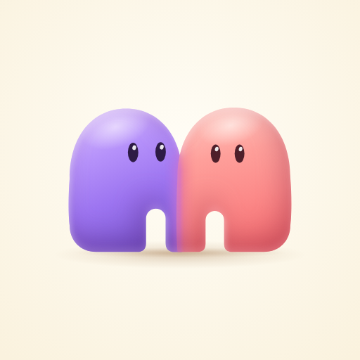
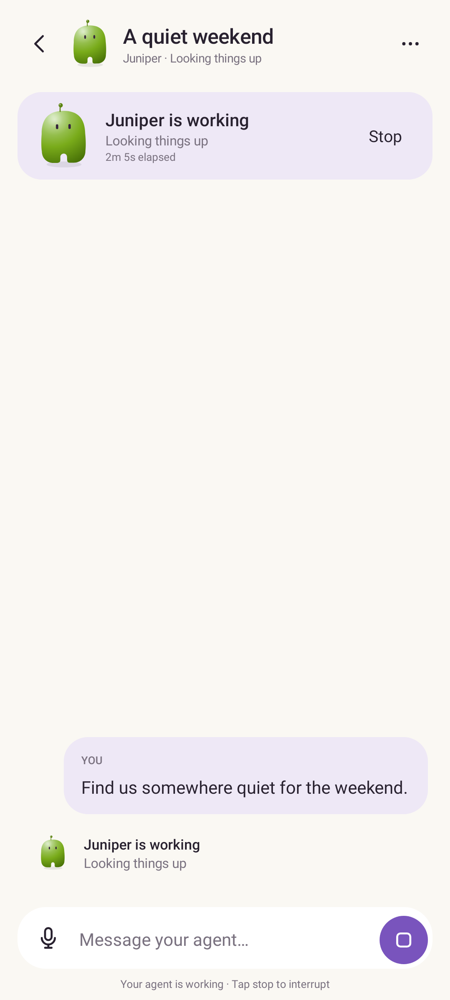
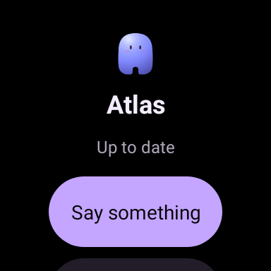
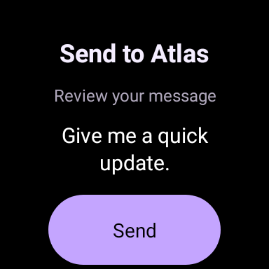

Pick up where you left off.
Your agents have a face again. Native Buddy characters follow their colours and show when they are thinking, working, replying or waiting for you.

murmurcompanionYour Murmur, at home in your pocket.
A quiet conversation on your wrist.
An independent companion for Android and Wear OS.
Made for your own Murmur by Umbrel.
Android 9+ · Wear OS 3+ · Free & open source


Native layout renders · illustrative agent data
FAMILIAR ON YOUR PHONE
Native Android conversations connect directly to your Murmur. Choose an agent, pick up a chat, and watch the reply arrive. No webpage to load for everyday conversations.
Your agents have a face again. Native Buddy characters follow their colours and show when they are thinking, working, replying or waiting for you.
An explicit Full Murmur workspace keeps groups, models, memories, routines, integrations and rich content available through your server's interface.
A clear activity card, elapsed time and Stop. Safe reconnects, drafts that stay put, and reduced-motion controls make everyday conversations feel calmer.

A LITTLE LESS. JUST ENOUGH.
Choose an agent. Say something or type it. Review your words, send them, and read the reply. Simple controls and a quiet black interface, shaped for a round watch.
The watch needs its paired Android phone and Google Play services. It doesn't connect to your server independently.
HOME, EVEN WHEN YOU'RE AWAY
Tailscale runs on your phone and the machine exposing Murmur. Your watch talks through the paired phone. One server address, with no extra watch VPN to manage.
Use Tailscale Serve for a private HTTPS address. Keep Umbrel's normal app login in front of Murmur, and paste the exact HTTPS address into the phone app.
Tailscale setupBRING THEM A LITTLE CLOSER
Both matching APKs, checksums and the complete installation guide.
Download the pair ZIP · 1.6 MBStart here if you're installing for the first time.
Native Buddy characters, clear working states and streamed conversations. Advanced features in Full workspace.
Download phone APK 1.1 MBAndroid 9 or newer
Short conversations for a round screen, relayed through your paired phone.
Download watch APK 0.6 MBWear OS 3 or newer · Separate install
A FEW MINUTES TO GET SETTLED
Have Murmur running on your server before you start. The native phone app connects to an existing installation; the watch follows your phone.
Open the APK from your Android file manager. When Android asks, allow that file manager to install unknown apps. You can turn that permission off afterward.
Open Murmur Companion and paste the root URL that opens Murmur in your browser, including https:// and any port. This should be Murmur's app address, not a bare Hermes dashboard.
If prompted, tap the sign-in card, complete login in Workspace, then tap Native app at the top. Choose an agent and open a native conversation. Reconnect from the connection menu if needed.
Android 9+, a current Android System WebView and an existing Murmur server. Google Play services is needed if you're pairing a watch.
Full installation guide ↗Pair your Pixel Watch to the Android phone and finish signing in to Murmur on the phone. Download the matching watch APK from the same pair.
In watch Settings → System → About → Versions, tap Build number seven times. In Developer options, enable ADB debugging and Wireless debugging. Choose Pair new device.
Put the computer and watch on the same Wi-Fi network. Replace the uppercase placeholders below. The pairing port and connection port are usually different.
adb pair WATCH_IP:PAIRING_PORT
adb connect WATCH_IP:CONNECTION_PORT
adb -s WATCH_IP:CONNECTION_PORT install -r murmur-companion-wear-candidate.apkChoose an agent, speak or type, review your message, and send. Turn off ADB and wireless debugging after installation. Normal use goes through the paired phone.
Install Android Platform Tools on your computer for adb. The phone and watch apps must share a signing certificate, so keep both APKs from the same build.
Use the same tailnet. Keep Murmur Companion included if you use per-app VPN routing on Android. The watch doesn't need a Tailscale installation.
Use the existing Umbrel app proxy listener, preserving the normal login. For a standalone installation, configure Murmur's password. Only use this example if port 3000 is your actual authenticated listener:
tailscale serve --bg http://127.0.0.1:3000
tailscale serve statusTest it in the phone's browser, then paste the exact root address into Murmur Companion. Use its full *.ts.net hostname so the HTTPS certificate matches.
Serve keeps access inside your tailnet. Direct private HTTP can be opted into, but web microphone capture needs HTTPS. Avoid relying on .local names away from home.
A CAREFUL STEP TOWARD BETA
Both APKs build, 29 automated tests pass, and Android lint reports zero errors. Optimized release builds are checked too. The character, working and approval layouts have been reviewed using Android runtime renders.
Permanent distribution signing, live Murmur and physical Pixel Watch validation are still needed before a broad beta. Advanced workspace features still use the explicit web screen; complete native desktop feature parity is not implemented.
A FEW GOOD QUESTIONS
No. Murmur Companion is independent, open-source software made for Murmur by Umbrel. It is not affiliated with or endorsed by Umbrel, Google or Tailscale.
The watch uses Google's Wear OS Data Layer to reach its paired Android phone, and the phone reaches Murmur. It needs a reachable paired phone with Google Play services and a working server connection. Standalone watch access isn't implemented.
The app adds no hosted account backend or developer chat relay. Phone sign-in stays in app-private WebView storage; Hermes access keys remain on Murmur's server. Your configured model providers and integrations still have their own behavior. Watch dictation may use the device's speech provider.
Check the Watch chat on your phone first. The message may already have arrived. The app never automatically retries a send after uncertain delivery.
Install newer APKs signed with the same certificate. Candidate APKs from unrelated builds may use different preview keys, so an upgrade can be refused. Keep phone and watch builds together. For a stable personal update key, follow the release-signing guide in the repository.
Yes. Use JDK 17, Android SDK 36 and the included Gradle wrapper. The repository contains the Android app, Wear OS client, shared API code, tests and build workflows under the MIT license.
Explore the source ↗